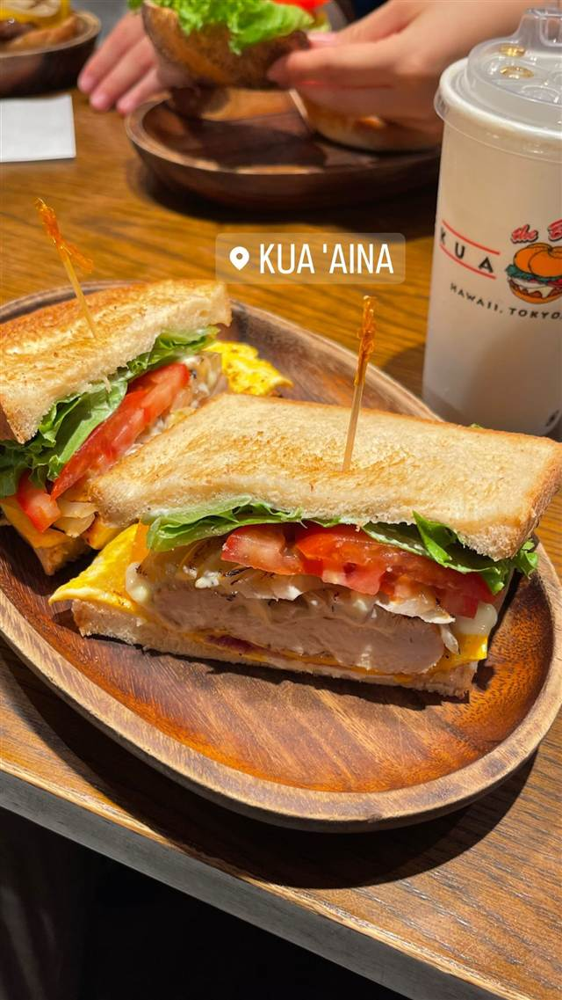
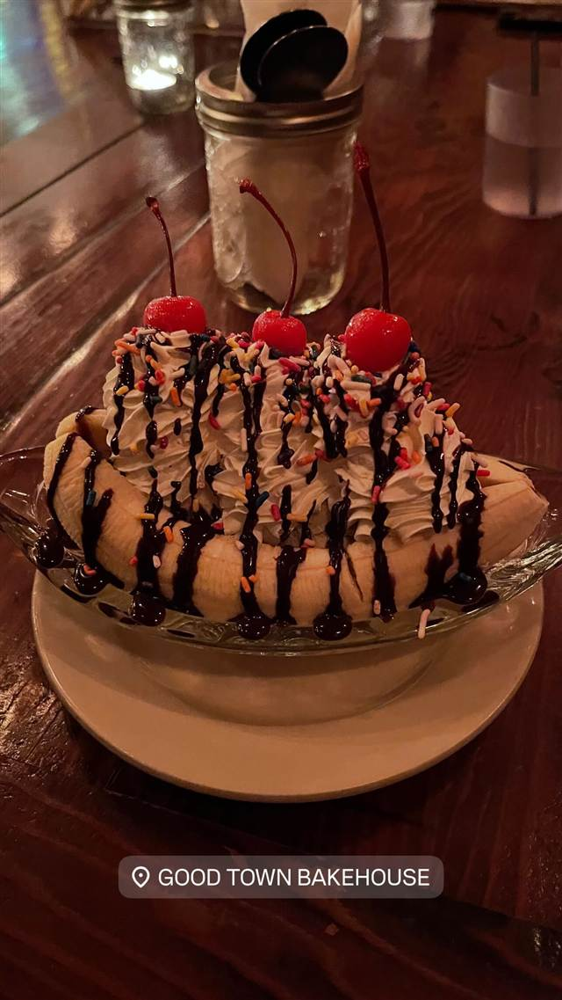
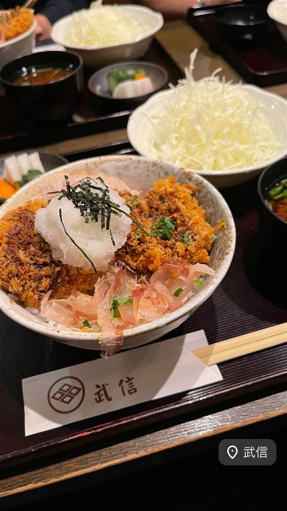
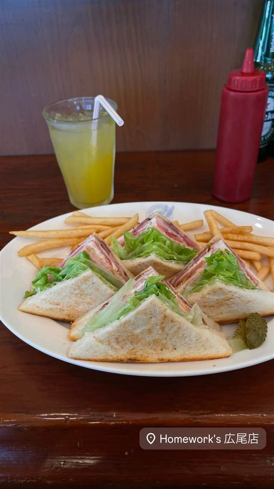
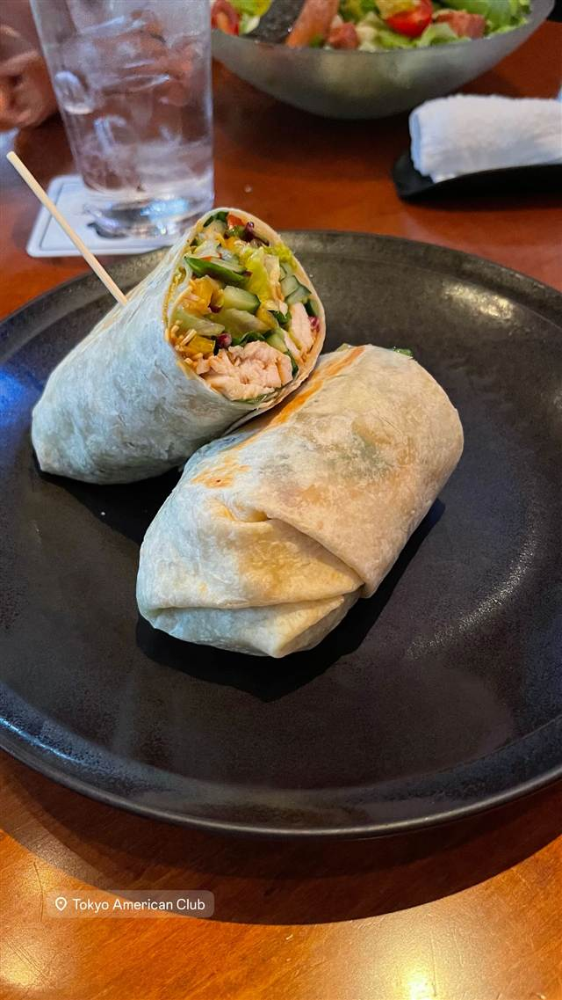
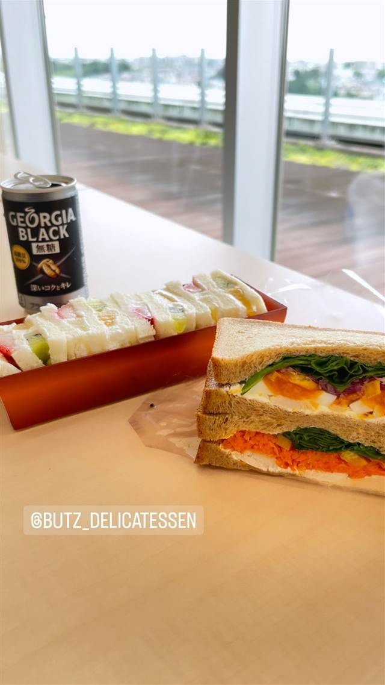

KUA 'AINA
食べたもの：サンドイッチ
NEARBY
近い店・同じ系統の店
-
 ★5
二郎系(インスパイア) 東北沢駅／駒場東大前駅
千里眼（センリガン）
夏季限定の冷やし中華も人気の二郎系インスパイア
昼 ～¥999 夜 ～¥999
★5
二郎系(インスパイア) 東北沢駅／駒場東大前駅
千里眼（センリガン）
夏季限定の冷やし中華も人気の二郎系インスパイア
昼 ～¥999 夜 ～¥999
-

ブランチ 代々木上原 GOOD TOWN BAKEHOUSE ベリーたっぷりパンケーキとプリンが名物のベーカリーカフェ 昼 ¥1,000～¥1,999 夜 ¥3,000～¥3,999 -

とんかつ 代々木上原 とんかつ武信 代々木上原店 川崎の本店からのれん分け、米油で揚げる特ロースかつと醤油かつ丼 昼 ¥1,000～¥1,999 夜 ¥1,000～¥1,999 -

サンドイッチ 広尾駅 ホームワークス 広尾店（Homework's） 日本初のグルメバーガー店、100%ビーフの自家配合パティ 昼 ¥1,000～¥1,999 -

サンドイッチ 麻布十番 Tokyo American Club（東京アメリカンクラブ） 排日移民法きっかけに設立の会員制クラブのラップサンド 昼 ¥3,000～¥3,999 夜 ¥3,000～¥3,999 -

サンドイッチ 自由が丘 Butz SANDWICH petit エトモ自由が丘店 ドイツ国家資格ゲゼレ取得の職人が作るハム・ソーセージのサンド 昼 ～¥999 夜 ～¥999